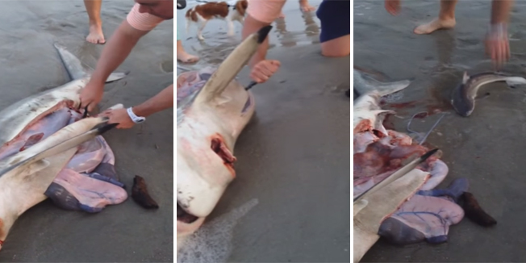
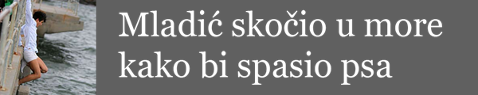
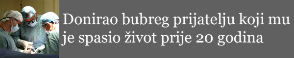

CAPE TOWN Američka obitelj na ljetovanju u Južnoj Africi za šetnje pješčanom plažom naišla je na leš morskog psa. I dok bi mnogi produžili dalje, oni su zastali i primijetili da se nešto miče unutar lešine.
Pomislili su kako su možda u pitanju bebe morski psi i neimenovani muškarac se bacio na posao uz pomoć džepnog noža dok je njegova supruga počela snimati cijelu operaciju.
Hrabri 'doktor' obavio je carski rez na lešu morskog psa i na veliko iznenađenje svih prisutnih iz utrobe preminule majke iskliznulo je mladunče.
Čuje se glas žene koja upozorava na opasnost od ugriza dok muškarac uzima malog morskog psa u ruku i nosi ga u ocean. Upozorenje je na mjestu, jer se morski psi rađaju sa svim zubima i odmah mogu krenuti u lov.
Neobična operacija privukla je prolaznike koji oduševljeno čestitaju hrabrom 'ginekologu'. Čuje se i ženski glas koji govori kako je 'ovo najcool stvar koju sam ikad vidjela'.
Nakon prvog, ubrzo su uslijedila još dva mala morska psa koja su također završila u prirodnom okruženju – oceanu.
Unatoč neobičnom porodu, mladunci su vjerojatno živi i zdravi. Naime, iako u maternici ostaju čak dvije godine, nakon poroda napuštaju majku, jer dolaze u opasnost da ih ona pojede.
 